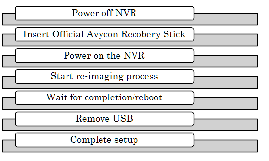
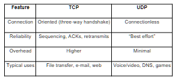
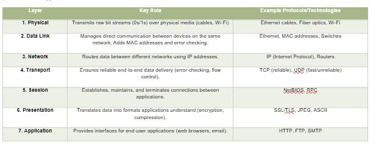
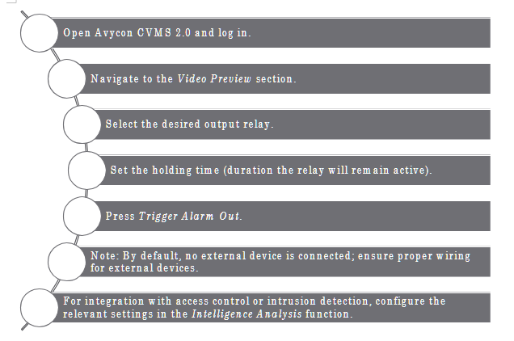
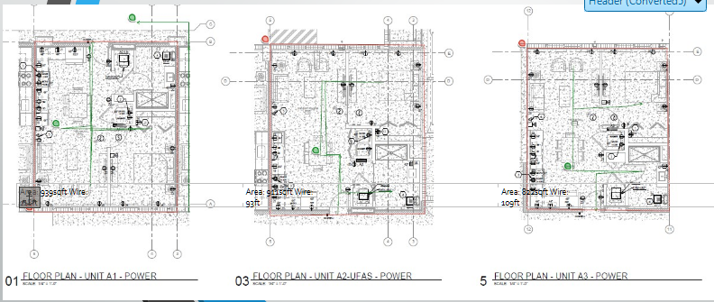
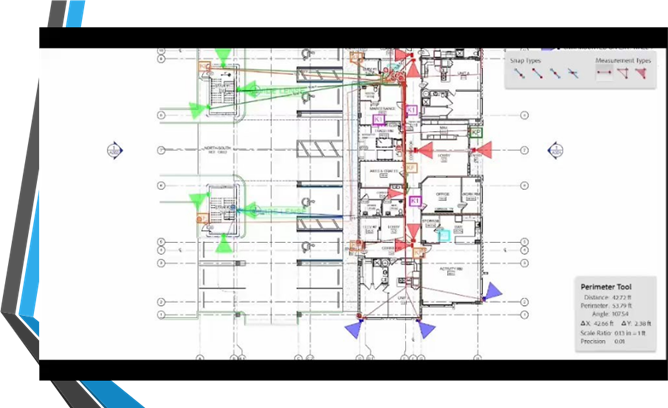
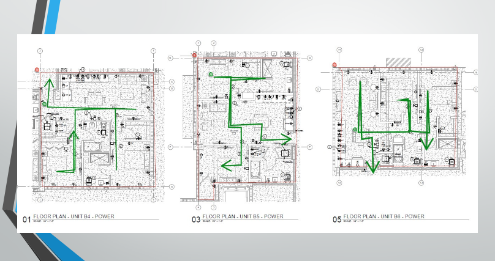
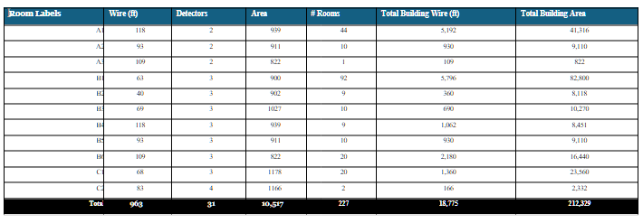
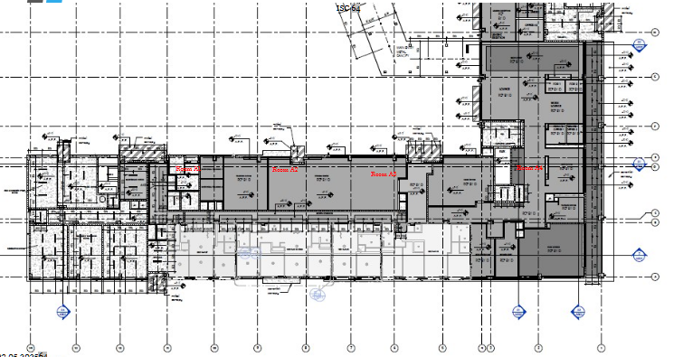

Key Surveillance Systems
Installation & Setup Manual
Field guide for CCTV, NVR, access control, and network deployments — Camect, ExacqVision, Avycon, Kantech, and more.
About this manual
Written for installation teams with hands-on experience. It covers system re-imaging, camera integration, remote viewing, troubleshooting, cable estimation, and vendor-specific workflows for reliable surveillance deployments.
- Video — dome, bullet, PTZ, IP, and wireless cameras
- Recorders — ExacqVision, Avycon, Camect hubs
- Access — Kantech / EntraPass controllers and credentials
- Design — network basics, runoffs, and floor-plan wire maps
Camera Types
Dome Cameras (Indoor)

Dome cameras are named for their dome-shaped housing, making them discreet and less noticeable. These cameras are typically mounted on ceilings or walls and offer a wide-angle view, ideal for monitoring large areas such as retail stores, offices, and warehouses.
Bullet Cameras
Bullet cameras, also known as cylindrical cameras, are characterized by their long and tapered shape. They are often used outdoors due to their weatherproof design.
PTZ Cameras
Pan-Tilt-Zoom (PTZ) cameras are highly versatile and capable of covering large areas with a single device. These cameras can pan, tilt, and zoom, allowing for comprehensive surveillance.
Wireless Cameras
Wireless cameras transmit video signals over Wi-Fi, eliminating the need for extensive cabling. They are easy to install and offer flexibility in placement.
IP Cameras
Internet Protocol (IP) cameras send and receive data over a network, enabling remote viewing and monitoring from anywhere with an internet connection. They offer high-resolution video and advanced features such as motion detection, video analytics, and cloud storage.
Each type serves distinct security needs, ranging from home monitoring to business surveillance.
Basic operations such as powering on/off, using the viewfinder, and the LCD screen.
ISO stands for International Organization for Standardization, indicating the camera's sensitivity to light. Utilize a low ISO in bright conditions and a high ISO in dim lighting.
Aperture refers to the opening in the camera lens through which light passes, measured in F-stops. A lower F-stop means more light is let in, while a higher F-stop is ideal for bright conditions and sharper focus.
A practical, step-by-step guide for camera installation teams working with Camect, ExacqVision and Avycon Systems. This manual covers essential procedures including system re-imaging, camera integration, remote viewing setup, troubleshooting, and advanced software features. Designed for technicians with hands-on experience, it delivers clear instructions, best practices, and quick-reference workflows to ensure reliable, professional surveillance deployments in any environment.
Internet of Things

The Internet of Things (IoT) refers to the way everyday devices—like smart thermostats, security cameras, and even printers—are connected and able to communicate with each other. These smart devices collect and share data to make our lives easier, from automating routine tasks to personalizing our experiences, often without us having to lift a finger.
All of this relies on strong connections
Whether wired or wireless, think of the network as the backbone of IoT—a channel that lets devices talk to each other. In a typical office, for example, you'll find a WiFi network connecting laptops and computers, a separate network for printers, and remote connections that link different office locations together, making it feel like everyone's in the same room, even if they're miles apart.
Thanks to these networks, you can send a document from your computer to the printer with a click, or cast a presentation from your laptop to the conference room TV via Bluetooth, allowing everyone to share information instantly. Networks also act as a security barrier: people inside the office can access resources from the outside world, but outsiders can't easily reach sensitive information inside—much like looking through a one-way mirror.
In short
IoT and the networks that support it are what make our modern, connected lives possible, seamlessly linking people, devices, and information. Networks in IoT systems are designed with security in mind, using encryption and authentication to protect data and devices from unauthorized access. They also allow for centralized management, making it easier to monitor device health, update software, and enforce security policies.
Network Fundamentals

1. What Is a Network?
- A network lets multiple devices share data (docs, e-mail, video) through switches or WLAN APs.
- Protocol "languages" (Ethernet, TCP, HTTP, SMTP) set the rules for how hosts talk.
- Mastering the basics is foundational for any IT or networking career.
2. Network Types & Scale
- SOHO → SMB → Enterprise: rising device count and infrastructure complexity.
- LAN (building-sized) vs WAN (connects LANs worldwide via service-provider backbones).
- Switches, routers and APs remain the core building blocks at every scale.
3. The OSI 7-Layer Model

The OSI (Open Systems Interconnection) 7-Layer Model is a framework that standardizes how devices communicate over a network by breaking the process into seven distinct layers. Each layer has a specific role, working with the layers above and below to ensure data flows smoothly from sender to receiver. Here's a simplified breakdown:
The 7 Layers Explained (From Bottom to Top)
| Layer | Key Role | Example Protocols/Technologies |
|---|---|---|
| 1. Physical | Transmits raw bit streams (0s/1s) over physical media (cables, Wi-Fi) | Ethernet cables, Fiber optics, Wi-Fi |
| 2. Data Link | Manages direct communication between devices on the same network. Adds MAC addresses and error checking. | Ethernet, MAC addresses, Switches |
| 3. Network | Routes data between different networks using IP addresses. | IP (Internet Protocol), Routers |
| 4. Transport | Ensures reliable end-to-end data delivery (error-checking, flow control). | TCP (reliable), UDP (fast/unreliable) |
| 5. Session | Establishes, maintains, and terminates connections between applications. | NetBIOS, RPC |
| 6. Presentation | Translates data into formats applications understand (encryption, compression). | SSL/TLS, JPEG, ASCII |
| 7. Application | Provides interfaces for end-user applications (web browsers, email). | HTTP, FTP, SMTP |
Memorizing all the layers isn't important; understanding their existence is. A layer is a setup partition often discussed by IT, useful for detailed planning. Think of it like a biological environment: microscopic life at the smallest level, trees and flowers at the macroscopic level, and mountains and oceans at the largest level. "High-level" refers to non-technical explanations.
How Layers Work Together
- Encapsulation: Data is wrapped with headers/trailers as it moves down the layers. For example:
- A web request (HTTP) starts at Layer 7.
- Transport Layer (TCP) adds a header with port numbers.
- Network Layer (IP) adds source/destination IP addresses (Level 3)
- Data Link Layer (Ethernet) adds MAC addresses (Level 2)
- Physical Layer sends bits over cables/fiber (Level 1)
- Example Stack: HTTP (Layer 7) → TCP (Layer 4) → IP (Layer 3) → Ethernet (Layer 2) → Cable/Fiber (Layer 1)
Key Concepts
- Layer Independence: Each layer only interacts with the layer directly above or below. For example, the Transport Layer (TCP) doesn't need to know if data is traveling over Ethernet or Wi-Fi.
- Headers/Trailers: Each layer adds its own metadata (e.g., IP headers for routing, TCP headers for ports).
- Real-World vs. OSI: Modern networks (like the internet) often combine layers. For instance, TCP/IP merges Layers 5–7 into a single "Application Layer."
Why This Matters
- Troubleshooting: If your web page won't load, you can isolate the issue:
- No connection? Check Physical/Link layers (cables, Wi-Fi).
- Can't reach a specific site? Check Network/Transport layers (IP/TCP).
- Security: Encryption happens at the Presentation Layer (SSL/TLS), while firewalls operate at the Network/Transport layers.
4. IPv4 Addressing Basics
- One 32-bit address = network ID + host ID.
- Dotted-decimal (0-255 each octet) yields 4.29 billion possible addresses.
- Subnet mask/CIDR bits separate the network from the host portion.
5. Subnetting, VLSM & Private Space
- VLSM lets you carve variable-size subnets, conserving addresses.
- RFC 1918 private ranges (10/8, 172.16/12, 192.168/16) stay internal; routers hide them with NAT.
- Broadcast (255.255.255.255) floods a LAN; multicast (224.0.0.0/4) delivers one-to-many efficiently.
6. TCP/IP Model (4-Layer)
- Link → Internet → Transport → Application (often shown with an optional Physical layer).
- Protocol highlights: Ethernet/PPP (Link), IP (Internet), TCP/UDP (Transport), HTTP/SMTP/SSH/etc. (App).
7. TCP vs UDP
| TCP | UDP | |
|---|---|---|
| Connection | Oriented (three-way handshake) | Connectionless |
| Reliability | Sequencing, ACKs, retransmits | "Best effort" |
| Overhead | Higher | Minimal |
| Typical uses | File transfer, e-mail, web | Voice/video, DNS, games |
8. TCP Handshakes & Flow Control
- 3-way SYN → SYN-ACK → ACK starts a session; 4-way FIN/ACK closes it.
- Sequence numbers + sliding windows handle ordering, congestion & retransmissions.
9. More TCP Internals
- Dynamic window sizing boosts throughput on clean links, shrinks on error.
- Forward ACK tells sender the next expected segment for efficient recovery.
10. Cisco CLI Primer
- Modes: User EXEC → Privileged EXEC → Global/Interface Config.
- Secure remote access with SSH (hostname, domain, RSA keys, local user, line vty).
- Always copy run start to persist changes.
11. Ethernet & Switching
- 48-bit MAC: 24-bit OUI + 24-bit device ID.
- Switch forwarding methods: store-and-forward (safe), cut-through (fast), fragment-free (middle).
- MAC-learning builds a CAM table; unknown frames flood, known frames forward/filter.
12. VLAN Fundamentals
- VLAN = virtual LAN; isolates Layer-2 broadcast domains logically.
- IDs 1-4094 (12-bit tag). Router or Layer-3 switch needed for inter-VLAN traffic.
13. VLAN Trunking
- 802.1Q tagging lets one link carry many VLANs.
- Native VLAN sends frames untagged for legacy compatibility.
- Router-on-a-Stick uses one sub-interface per VLAN for routing.
14. Access Control Lists (ACLs)
- Ordered rules match traffic; implicit deny at end.
- Standard (source only) vs Extended (src/dst, protocol, port).
- Wildcard masks (0 = match exact, 1 = "any") simplify IP ranges.
15. ARP Essentials
- Broadcast "Who has IP X?" → unicast reply with MAC.
- Entries live ~30 s in cache (can be flushed).
- Variants: RARP (MAC→IP), GARP (gratuitous update).
16. DHCP in a Nutshell
- DORA cycle: Discover → Offer → Request → ACK.
- Leases renew at T/2; options supply gateway, DNS, etc.
- Relay agents forward client broadcasts across subnets.
17. DNS Basics
- Zones hold records: A, AAAA, CNAME, MX, PTR.
- Resolvers use recursion & root hints to find authoritative answers.
- TTL controls cache lifetime; ipconfig /flushdns clears locally.
18. Static Routing (ip route)
- Explicit destination/mask + next-hop or exit-interface.
- 0.0.0.0/0 = default route. Use permanent to keep entry despite link state.
19. RIP v2 Overview
- Distance-vector; metric = hop count (max 15).
- Split-horizon & route poisoning fight loops.
- Timers: update 30 s, invalid/hold-down 180 s, flush 240 s.
20. Network Address Translation (NAT)
- Static 1:1, Dynamic pool, PAT/Overload many-to-one via port numbers.
- Bidirectional NAT allows outside-initiated sessions if configured.
21. Time Synchronization (NTP)
- NTP (UDP 123) hierarchies: stratum 0 atomic → 1 → 2 ...
- ntp server <ip-or-pool> on Cisco; check with show ntp status.
22. Syslog Fundamentals
- Message format = facility.severity (0 = emerg ... 7 = debug).
- Mnemonic: Every Awesome Cisco Engineer Will Need Ice-cream Daily.
- Central server aggregates logs; filter by severity to spot critical issues fast.
How to Use These Notes
- Skim before labs — know which layer/protocol to troubleshoot first.
- Make flashcards — e.g., "RIP max hops?" → 15.
- Revisit after practice — add personal examples (configs, pings, Wireshark captures).
How to Re-Image an ExacqVision NVR
Imagine transforming your ExacqVision NVR back to its pristine factory state, ready to tackle new challenges or resolve stubborn software issues. Re-imaging your NVR is like hitting the reset button, giving it a fresh start. But remember, this process wipes out all existing data, so make sure to back up your important files before diving in. Let's get started on this exciting journey to restart your NVR!
Step-by-Step Process
- Power off the NVR and connect a monitor, keyboard, and mouse.
- Insert the ExacqVision recovery USB drive or DVD.
- Power on the NVR and enter the BIOS/boot menu (usually by pressing F12 or Esc).
- Select the USB/DVD as the boot device.
- Follow the on-screen prompts to start the imaging process.
- Choose the correct image version as required.
- Confirm that you wish to proceed, acknowledging that all data will be erased.
- Wait for the process to complete; the NVR will reboot automatically.
- Remove the USB/DVD and allow the system to boot into the ExacqVision OS.
- Complete the initial setup, including network configuration and license activation.
- Restore configuration and video backups as needed.
Adding a New Camera
When performing a fresh installation we will add new cameras. The process is analogous to adding new controllers to an Xbox. This includes both the physical site and through the ExacqVision MAP. This setup allows for real-time monitoring, alarms, and AI detection provided by ExacqVision. Maintaining a consistent method for adding new devices will ensure a clean and easy-to-navigate final setup.
Adding New Camera and Replacing Camera on ExacqVision Map
- Open the ExacqVision Client and log in.
- Navigate to the Setup tab.
- Select the server, then go to the IP Cameras section.
- Click Add and enter the camera's IP address, username, and password.
- Ensure the camera shares the first three segments of its IP address with the server for successful integration.
- Click Apply and verify the camera connects.
- Go to the Maps section, select the desired map, and drag the new camera onto the map layout.
- Save changes.
Replacing a Camera
- Remove the old camera from the map by right-clicking and selecting Remove.
- Add the new camera as described above.
- Drag the new camera onto the map in the desired position.
- Update camera labels and settings as needed.
- Save the map layout.
Avycon NVR
Overview
Re-imaging an Avycon NVR is used to restore factory settings or recover from system corruption. This process deletes all data.
How to Use the Avycon CVMS Manual Alarm Triggers
The Avycon CVMS 2.0 software enables manual control of alarm relay outputs for managing external devices such as lights and sirens, enhancing security and enabling real-time monitoring.
Key Functions
- Manually trigger alarm relay outputs to control external devices.
- Customize triggers based on specific events or schedules.
- Integrate with access control systems for enhanced entry monitoring.
- Use intrusion detection for area monitoring.
- Schedule alarm relay activation for local sirens or other devices.
Avycon CVMS 2.0: Playback, Backup, and Resource Management
Playback Footage in Sync
- Select multiple cameras for synchronized playback.
- Use the timeline to play back footage from the same time across selected cameras.
Backup Footage
- Select the desired camera(s) and time range.
- Click Backup and choose a local disk as the destination.
- Confirm and monitor the backup progress.
Avycon Resource Management
- Limit simultaneous playback sessions to avoid overloading the workstation.
- Close unused streams and sessions when not needed.
Time Slice by Event and by Tag
- By Event: Filter footage by motion or alarm events.
- By Tag: Search video by user-created tags for quick retrieval.
Step-by-Step: Searching by Date, Camera, and Event
- Open the Playback tab.
- Select the camera(s) and date range.
- Use the Event or Tag filters to narrow results.
- Review the timeline for marked events.
- Click on an event to play back the relevant footage.
Remote Viewing
How to Set Up an ExacqVision NVR for Remote Viewing
- Connect the NVR to the network and ensure Internet access.
- Open the ExacqVision Client and log in as admin.
- Go to System > Network settings.
- Configure the NVR with a static IP address.
- Set up port forwarding on the router for the required ExacqVision ports (default: 80, 443, 22609).
- Register for Exacq cloud-hosted relay service for simplified remote access if available.
- Test remote connectivity using the ExacqVision mobile or desktop client from an external network.
How to Set Up an Avycon NVR for Remote Viewing
- Connect the NVR to the network and ensure it has Internet access.
- Assign a static IP address to the NVR.
- Set up port forwarding on the router for HTTP, RTSP, and client ports.
- Enable P2P/Cloud access in the NVR's network settings if available.
- Scan the QR code in the mobile app or enter the NVR's serial number.
- Test remote viewing from an external device.
How to Troubleshoot an Avycon Camera Not Showing Up in NVR
- Ensure the camera and NVR are on the same network segment.
- Check the camera's power and network connections.
- Use the Avycon camera search tool to find the camera's IP address.
- Confirm the camera's IP address matches the NVR's subnet.
- Check for IP conflicts.
- Ensure the camera's firmware is up to date.
- Add the camera manually using its IP address and credentials.
- Reboot the camera and NVR if necessary.
How to Set the IP Address in an Avycon Camera
- Connect the camera to the network and power it on.
- Use the Avycon IP search tool or access the camera's web interface from a PC.
- Log in with the default credentials.
- Navigate to Network Settings.
- Assign a static IP address that matches the NVR's subnet (first three segments should match).
- Save and reboot the camera.
- Verify connectivity by pinging the camera's IP address from a PC.
Camect Hub Installation & Configuration Guide

1. Purpose & Scope
This guide standardizes the installation and commissioning of Camect Smart Camera Hubs across Integrated Security Consultants (ISC) customer sites—ranging from K-12 campuses to high-throughput facilities such as the Coca-Cola bottling plant. It is written for field technicians who physically install cameras and bring new sites online. Follow these steps exactly to ensure reliable video capture, alerting, and Central Station integration.
Important: ISC's reputation rests on zero-downtime security coverage. Deviations from this playbook require written approval from the Project Engineer of Record (PER).
2. Pre-Installation Checklist
- Confirm work order, camera schedule, and floor plans are in ServiceNow ticket.
- Verify PoE switch ports, patch panels, and power outlets are live.
- Obtain LAN IP range, DNS, gateway, and VLAN tags from customer IT.
- Confirm outbound ports 443 (TCP) and 554 (TCP/UDP) are permitted to ISC NOC for Immix.
- Record camera MAC addresses for asset tracking.
- Have a laptop with Chrome/Edge, USB-C Ethernet adapter, and Cat-5e jumpers.
3. Unboxing & Power-Up
- Mount the Camect Hub in the designated IDF/MDF rack shelf (leave 1 RU clearance).
- Patch Cat-5e/6 from Hub LAN 1 to the security VLAN switch port.
- Connect the supplied 12 V DC adapter to conditioned power (UPS recommended).
- Verify the LED ring illuminates solid blue within 30 s.
- If the ring is dark, reseat power; press the side power button once to start a soft boot.
Trouble Tip: A flashing red ring indicates the hub cannot reach the internet—check VLAN ACLs.
4. Commissioning & Authentication
- On a technician laptop on the same VLAN, browse to home.camect.com → V2 portal.
- Click Sign in with Google and use the site-specific ISC installer account (format isc.<site-code>@integratedsecuritycorp.com).
- Using the federated Google method prevents repeated email verifications.
- Accept the Camect Terms & Policy → Add Hub.
- The portal auto-discovers the Hub at 192.168.x.x. Select Activate.
- Leave default consent check-boxes enabled (auto-password, optimized settings, email alerts) unless instructed by PER.
- Rename the Hub following ISC naming schema: SITE-CODE_HUB-## (e.g., COKE-ATL_HUB-01).
Note: Large campuses may use multiple hubs—record Asset ID sticker in ServiceNow.
5. Network Configuration
| Setting | Value | Notes |
|---|---|---|
| Hostname | Matches Hub name | Visible in DHCP & NMS. |
| Full Network Scan | Disabled | Prevents discovery of non-security IoT devices. Navigate ⚙️ Gear → Advanced → Scan local network — uncheck both boxes. |
| Static IP | Yes | Assign per cut-sheet; set DNS to customer internal resolver. |
6. Adding Cameras
6.1 Auto-Discovery (Default)
- After commissioning, the Hub scans for ONVIF/RTSP cameras on the security VLAN.
- Review discovered list → Add only those matching the work order.
6.2 Manual RTSP URL
Use when cameras are on separate subnets or require sub-stream selection.
rtsp://<username>:<password>@<IP>:554/1 # mainstreamrtsp://<username>:<password>@<IP>:554/2 # sub-stream
Steps: ⚙️ Gear → Cameras → Add Camera → Stream URL. Paste URL → Save. Test live view.
Tip: Click the ⚙️ icon under a camera name → Edit URL to switch streams without re-adding.
7. Alert & Analytics Configuration
| Feature | Configuration | Navigation |
|---|---|---|
| Object Detection | Limit alerts to person, vehicle, animal as required by SOW. | ⚙️ Gear → Alerts → Object List |
| Notification Channels | Email (installer), messaging (client), Camect App. | ⚙️ Gear → Alerts → Send alerts by... |
| Disable Auto-Suppression | Required for 24 × 7 monitoring sites (schools). | Alerts → Advanced → Do not auto-suppress similar events |
| Areas of Interest & Ratings | Exclude sidewalks; enforce no-loiter zones. | Camera View → Draw Box → Rating |
| Time Constraints | Detect package trucks 07:00–18:00 only. | Alerts → Time Constraints |
| Loitering | Alert if person stationary > 20 s near entrance. | Create Thumbs-Down rating (loitering=20 s) |
| Line Crossing | Trigger when vehicle crosses perimeter line → gate opens. | Camera View → Draw Red Line (double-click to flip) |
| Sensitivity Mode | Improve thermal/night cameras; expect more false positives. | Alerts → Sensitivity Mode (per camera) |
| Long-Distance Mode | Sporting fields, parking lots. Requires 4K camera & added CPU. | Alerts → Long Distance Mode |
8. Clip Management & Evidence Export
- Hover Bell 🔔 to view unacknowledged alerts; click a timestamp to jump in Timeline.
- Drag brackets [ ] to set start/end → Download (MP4) or Share.
- First-time share prompts Google Drive link creation—use the ISC service account.
- Option: Summarized Video for condensed evidentiary review.
9. Immix Integration (Central Station)
- Port-forward Hub WAN to 443 & 554 at customer firewall.
- In Immix: Add Site → fill address, customer code.
- Add Device → Type =Camect, WAN IP, Secure Port = 443, credentials (local Hub admin).
- Auto-Configure Cameras—pull list from Hub.
- Enable Alarms in Hub → Immix receives events; verify talk-down audio (press-to-talk > 2 s).
10. Maintenance & Support
| Task | Frequency | Action |
|---|---|---|
| Review resource usage bar | After adding each camera | Hub Dashboard |
| Submit bug report | As needed | ⚙️ Gear → System → Report Bug (attach logs) |
| Firmware update | Quarterly release | ISC Change Control SOP 16-Q |
| Verify alert delivery to NOC | Post-install & monthly | Immix event log |
11. Post-Installation QA Checklist
- All cameras display live video in Camect UI.
- Correct site & zone names appear in Immix.
- Test person detection alert and verify email to noc@integratedsecuritycorp.com.
- Download sample clip and confirm playback on technician laptop.
- Asset tags entered in ServiceNow ticket & signed off by PER.
12. Troubleshooting Quick Reference
| Issue | Cause | Solution |
|---|---|---|
| Blue ring absent | No power or bad adapter | Check UPS outlet, press power button. |
| Hub not discovered | VLAN mismatch | Use laptop on same subnet; manually browse to Hub IP. |
| Excess false alerts | Sensitivity mode on | Disable per camera; review lighting. |
| Immix not receiving alarms | Port 443/554 blocked | Confirm NAT/ACL; test with telnet. |
| Talk-down one-way | Mic muted in Immix | Check PC audio permissions; verify Hub FW ≥ x.x. |
KamTech Tutorials
Entrapass GoPass Mobile Credentials Training: Programming and Use
Mobile Access Setup
🔑 EntraPass GoPass enables mobile credentials by requiring users to enter a passcode, select sites, and add doors to favorites for quick access.
Card Holder Management
👤 Adding new card holders in EntraPass GoPass involves inputting essential details like name, email, card type/number, end date, and assigning the appropriate access level.
Application Activation
📱 Activating EntraPass GoPass requires users to check for an activation email, download the app via the provided link, and use mobile credentials to complete the setup process.
Replacing lithium battery on KT 1 controller
Battery Replacement Procedure
🔧 To replace the lithium battery on a KT-1 controller, first remove it from the faceplate by gently pulling, then pinch the clamp at the end and gently push it out, repeating for all four clamps.
Kantech Onboard Guide
Integration and Cost Savings
🔗 Kantech EntraPass Corporate Edition integrates access control with video recording on exacqVision recorders, providing hardware, power, and cooling cost savings.
Installation and Configuration
🔑 To install, log into the restricted user account, then the administrator account (password: admin256) on the exacqVision recorder and follow the installation walkthrough.
🎯 Configure backup targets by launching the Workstation application, logging in with admin admin256, clicking Options > Backup Scheduler, and changing the default location to a removable media or network share.
Registration and Cleanup
📋 Kantech certified technicians must perform the registration process by providing the system serial number to Kantech.
🗑️ After installation, delete the Interpass web icon and Interpass folder to free up over 1 GB of space on the exacqVision server.
Kantech Access Control, exacqVision
Integration and Control
🔐 2 integrates with Kantech Entrapass access control system, enabling users to control doors and locks directly from the live view page.
🕹️ Users can perform access control functions like arming, unlocking, disabling, bypassing, and activating through the live view page and camera links feature.
Event Management and Visualization
🔗 The event linking page allows users to associate access control inputs with events, triggering actions like video recording or notifications when device status changes.
🗺️ exacqVision's mapping function provides a clear visual representation of access control status, showing which entryways are triggered, unlocked, or armed.
Configuration
🔧 The add access control section in the configuration tree displays available functions, including relays, door locks, and readers, based on the connected access control device.
Converting ioProx cards from 24 to 32 bits
Card Encoding and Compatibility
🔐 ioProx cards are dual encoded with a 26-bit number and an extended family code for 32-bit compatibility, enabling flexible usage across different systems.
Conversion Process
🔄 To convert all cards to a specific 32-bit extended family code, navigate to Options > Display Format, select 32-bit global card format, and choose Yes to create a backup and perform the conversion.
🔁 For auto-converting ioProx cards from 24-bit to 32-bit, select 32-bit global card format in Options > Display Format, choose No to convert all cards, then Yes for auto-conversion, requiring an initial access denied swipe for each card.
System Flexibility
🔓 The dual encoding feature of ioProx cards allows for seamless transition between 26-bit and 32-bit systems without replacing existing cards.
User Experience
👤 During the auto-conversion process, users will experience a one-time access denied message, which is automatically corrected on the subsequent card swipe.
Kantech email server
Configuration
- 🖥️ To configure a Kantech email server, gather essential SMTP server information including IP address, domain name, email port, sender, encryption, authentication, username, and password.
- 🔒 SmartLink must be installed and running to enable sending emails from triggers or reliance using the SmartLink email tab in the devices application.
Functionality
- 📊 Automatic report emails can be sent using the email reports tab in the devices application for Entry Pass and Corporate editions, while the Global edition uses a separate email reports tab.
- 🧪 Test the email server configuration by entering a valid email and test area, then clicking the test button to ensure proper setup and receive an "OK" confirmation message.
EntraPass IP communication Troubleshooting
Troubleshooting Process
- 🔍 Gather critical information including IP address, subnet, gateway, protocol, MAC address, and broadcast configuration to effectively diagnose and resolve IP communication issues.
- 🌐 Verify the enterprise gateway's communication status as the first step, which can reveal issues like "gateway not connected", "IP device disabled", or "failed to reach IP device".
Technical Checks
- 🖥️ Test TCP port 1802 using the telnet function from a laptop to determine if communication is possible and identify potential antivirus or firewall blockages.
- 🔄 If controllers communicate initially but then reboot and fail to reconnect, it likely indicates incorrect information programmed in "devices connection".
- 🏷️ Ping the controller's IP address before and after disconnecting it to identify potential IP conflicts if responses continue after disconnection.
12 things you may not know about EntraPass
Advanced Features
- 🔧 EntraPass offers a driver builder software for creating custom card drivers, accessible via Start > All Programs > Kantech Server > Database Utility.
- 🔄 The software supports free upgrades to any build within the same version and provides self-extracting backups containing version and edition information.
Efficiency Tools
- ⌨️ Shortcut keys for quick access to various features are pre-built into EntraPass, viewable in the Help menu.
- 🖨️ A printer icon for card list printing and automatic time synchronization in Corporate and Global editions enhance user efficiency.
Maintenance and Support
- 🛠️ EntraPass includes a database utility tool for running scans, correcting mistakes, cleaning the database, and removing deleted items, alongside a how-to section with instructional videos in the Help menu.
Driver Builder
Card Driver Creation Process
🔢 Driver Builder requires entering the exact card number, clicking "scan to match", and swiping the card to create a driver for a standard card or legacy controller.
🧮 The raw data from the card must be matched with its binary representation in Notepad, obtained by converting the card number and site code using the Windows calculator.
Card Data Structure
🃏 In the Wiegand format standard, the 8-bit site code (hexadecimal for alpha characters) is displayed on the left, while the 16-bit card number (binary) is on the right.
Legacy Controller Support
🏛️ Driver Builder supports creating drivers for legacy controllers by selecting the appropriate option and following a similar process to standard card driver creation.
ioSmart 485
Reader Capabilities
🔖 ioSmart card readers can read 6 card types, while multi-technology readers support 9 card types, including additional 125 kHz formats.
Connectivity and Installation
🔌 ioSmart readers connect to controller's D0 and D1 terminals and can be wired in daisy chain or star pattern configurations.
Configuration and Management
🖥️ Reader serial numbers can be retrieved through the operation controller or devices controller interfaces, enabling easy identification and management.
Input/Output Flexibility
🔧 ioSmart readers offer configurable inputs and outputs, including LED inputs, lock outputs, and open collector relay outputs, with up to 750 mA capacity for relay/lock outputs.
Advanced Features
⌨️ ioSmart readers can include an optional keypad, with the ability to define inputs and outputs directly from the reader interface.
KT 1 standalone
Security and Configuration
🔐 The KT-1 requires firmware version 2.0.14 or above for standalone mode and demands encrypted installer or operator login creation, which cannot be reset, emphasizing the importance of password retention.
🛠️ Standalone mode allows selection of two card formats from 31 built-in drivers, adjustment of PIN digits (4-6), and entry of I/O smart serial number for communication setup.
Functionality and Integration
🚪 Users can configure doors, set specific daily/weekly/monthly/annual actions, and integrate with alarm systems using keys exclusive to the door tab.
Data Management
💾 The system prompts for automatic backup of card and schedule information, which is strongly recommended for data preservation and programming purposes.
Activation Process
📋 Customer and installer information must be entered to activate the KT-1, either through the web configuration page, Kantech website, or by contacting technical support.
ioSmart Wiegand
Reader Compatibility
🔑 IoSmart reader supports multiple card technologies including io smart, Mifare plus, SSF, can tech, and Mifare classic, while Multi tech reader adds compatibility for HID 125 kHz and Tak io procs cards.
Configuration
🔧 When connecting a reader for the first time, select the output format using beep codes: 3 beeps for SSF, 2 for XSF, 1 for 26 bit, and 34 bits for 34 bit format.
Data Processing
🔒 Multi tech readers send raw HID data to the controller for decryption, requiring the correct reader type to be selected under devices controller for proper functionality.
Factory Defaulting Intevo
Factory Default Process
- 🔄 To factory default an Intevo unit, press F8 repeatedly during startup until reaching the "Repair Your Computer" page, then enter the restoration password "1-2-3-4-5" to initiate the recovery process.
- 💾 Before defaulting, backup critical data including archives, video events, and client version information using the Exact Vision Client's Backup Scheduler.
System Configuration
- 🖥️ After defaulting, reconfigure the unit by selecting language, accepting licensing, setting computer name, time zone, and entering static IP addresses for each Ethernet adapter in the First Boot Wizard.
Post-Default Steps
- 🔍 Verify and upgrade if necessary the versions of H DVR (or Exact Vision) and Entry Pass after completing the factory default process.
- 🔒 Record essential information before defaulting, including computer name, workgroup/domain, and IP information for both Ethernet adapters using ipconfig /all command.
Basics of Access Control
Core Components
🔐 Access control systems comprise five key elements: an access controller, reader/keypad, door contact, door strike/magnetic lock, and request to exit unit.
🧠 The access controller acts as the system's brain, continuously monitoring door status and granting access based on programmed credentials.
Functionality
🚪 Door strikes or magnetic locks physically secure entrances, releasing only when the controller grants access.
👋 Request to exit units, utilizing motion infrared detectors or manual buttons, allow credential-free egress from controlled areas.
Security Mechanism
🔢 Access controllers use decryption templates to translate binary reader data into card numbers, granting entry if the decryption matches the card's encryption.
How to blank the database for Special, Corporate or Global Edition
Database Management
- 🗑️ To blank the database for EntraPass Special, Corporate, or Global Editions, delete all files in the "C:\Program Files x86\Kantech\Server SE/CE/G\Data" folder and replace them with files from the "Server uncore C\Data SRC" folder.
- 🔄 This process applies to all Editions and versions of EntraPass, providing a universal solution for database reset across different software variants.
Troubleshooting
- 🛠️ Blanking the database is a crucial troubleshooting step when facing database corruption or when customers are locked out of the system, offering a clean slate for system recovery.
Software Specifics
- 🔒 The instructions are specific to Kantech's EntraPass software and its Server SE/CE/G versions, highlighting the importance of following manufacturer-specific guidelines for security management systems.
Post-Reset Procedure
- 🖥️ After blanking the database, users must close the folder and restart the EntraPass software to access the system with the newly created blank database, ensuring proper initialization of the reset environment.
How to integrate a Neo panel to a KT-400 or KT-1 with version 4 communicator
Integration Requirements and Setup
🔧 Minimum firmware versions required: KT-400 (1.17 rev 1 or 1.23+), KT-1 (1.03+), Neo panel (1.10+), and TL-28R module (4.10+) for successful integration.
🔌 Hardware connection involves linking the Neo panel to TL-28R module via Ethernet, which then communicates with KT-400/KT-1 over Ethernet network.
Programming and Configuration
🖥️ Program Neo panel by accessing subsection 382, selecting option 5 for alternate communications, and ensuring "yes" is selected.
🌐 Configure TL-28R module's IP address in Neo panel by activating numbers 3 and 5 in subsection 851 and 663, then entering KT-400/KT-1's static IP in subsection 693.
Functionality
🔐 Enable arm/disarm from door by selecting door in Entrapass, enabling multi-swipe, choosing double-swipe action for arm/disarm, and selecting partition to control.
How to factory default a KT-400
Factory Default Process
- 🔄 To factory default a KT-400 to DHCP: remove jumpers JP 2 and JP 3, press reset button for 5 seconds, wait for heartbeat LED to go solid then flash.
- 🔒 For static IP factory default: keep only jumper JP 2 on, press reset button for 5 seconds, observe heartbeat LED flashing with 3 long pulses twice.
Post-Reset Configuration
- 🔌 After factory defaulting to static IP, replace jumper JP 3 before saving configuration to prevent reverting to static IP.
LED Indicators
- 💡 Heartbeat LED behavior during reset: goes solid temporarily, then flashes to indicate process completion.
Reset vs. Factory Default
- 🔁 Reset process for both DHCP and static IP is identical to factory default procedure for respective configurations.
How to create and manage access levels
Access Management
🔑 Create new access levels by selecting schedules for each door, allowing granular control over user access rights across different areas of a facility.
🔄 Modify access level schedules in the "definition schedule" section to update access rights for all associated doors simultaneously, streamlining security management.
Card Administration
💳 Add new cards to the system by assigning them names, card numbers, and specific access levels, enabling customized user permissions.
🚪 Swipe cards at readers to test functionality and receive status messages, including "access denied card unknown" for unregistered cards.
Efficient User Management
👤 Quickly add new users by right-clicking on access denial events and selecting "edit" then "card," automatically populating the card number field for streamlined onboarding.
How to create and manage holidays
Holiday Management
- 📅 Create holidays in Enterp Pass software by navigating to Definition > Holiday, entering name and date, selecting recurring option, and choosing holiday type for different schedules.
- 🔄 Selective holidays can be applied to specific sites or connections, while recurring holidays automatically repeat annually on the same date.
Schedule Integration
- 🗓️ Create holiday schedules by going to Definition > Schedule, applying different schedules to various holiday types and dates.
- 🚪 Test holiday-schedule relationships by defining a holiday and checking the operation door to observe schedule effects.
System Indicators
- 🔍 Detect active holidays in the system by looking for an orange dot in the bottom left corner, which displays "Holiday detected" on mouseover.
Creating Backups in Corporate and Global Edition
Backup Management
- 🔄 Entrapass Corporate and Global Edition offers flexible backup options including data, archive, In-N-Out, and video types, with customizable frequency settings (now, weekly, monthly, daily) and location choices (default or specific folder).
- 🗂️ The system supports nested backups, allowing users to create backups within backups for enhanced data organization and security.
Restoration Process
- 🔙 Restoring backups is streamlined through the Server > Backup > Restore Data path, with a simple folder selection process and automatic event generation upon successful restoration.
System Features
- 📁 Default backups are stored in C:\Program Files\Program Files x86\Contact Ser_CE\Backup with folders named using a "D" prefix followed by date and time.
- 📊 The platform provides real-time event generation for backup and restore processes, ensuring users are informed of progress and potential issues throughout the operation.
Creating a KT-400 IP site
Network Configuration
🌐 KT-400 IP site setup requires selecting a corporate Gateway, specifying the number of controllers, and choosing between "secure IP kt4 100" for KT-400 or "secure IP IP Link" for IP Link as the connection type.
🖧 For non-DHCP configurations, enter a private IP address with subnet, mask, and gateway, then select either TCP or UDP protocol and specify the communication port.
Installing a Remote Workstation
Installation Requirements
🔑 Remote workstations require additional licenses beyond the 2 included in Global Edition and 4 in Corporate Edition of KC Entropass software.
🖥️ The remote workstation must be the exact same version as the server, with firewall exceptions for TCP ports 18000, 18112, and 18101 on both machines.
Setup Process
🔢 Before installation, select the workstation in the registration window and note the workstation installation code for use during setup.
🔗 After installation, register the workstation to the server using the server's TCP/IP address or domain name, authentication password (default: canch), and workstation installation code.
Access and Operation
🔐 To access the remote workstation, click the login button and enter username and password when the workstation is running.
Hard resetting a KT-400 or IP-Link
Hardware Reset Procedures
🔧 Hard resetting a KT-400 requires removing JP2 and JP3, pressing reset for 2 seconds, waiting for heartbeat blinking, replacing AP2, and repeating reset process.
🔌 To default an IP-Link, place jumpers between PGM1-I1 and PGM2-I2, wait for rapid heartbeat flash followed by solid light, then remove jumpers.
Network Configuration
🌐 KT-400's default IP is 192.168.1.2, with laptop configured to 192.168.1.3 for setup.
⚙️ Configuring KT-400 involves entering server IP/domain, disabling DHCP if unused, setting local IP, subnet mask, gateway IP, DNS, and selecting UDP/TCP protocol and port.
Define a new card in Special Edition
Card Management
🔑 Special Edition software allows adding new cards via the "user card" menu by entering a card number or swiping the card to generate an "access denied" event.
📸 Right-clicking on a card enables adding a picture from file, which will display when the card accesses a door.
Access Control
🔐 The "access level" setting determines card privileges, ranging from "none" (no access) to "always valid" (24/7 access to all doors).
🗓️ Setting a "card expiration date" automatically deletes the card on the specified date, while changing the "card state" to "expired" deletes it immediately.
How to send email notifications for EntraPass events
Email Notification Setup
🔧 Ensure Smart Link is running and communicating with the server, and the email server doesn't require authentication or face antivirus blocking.
📧 Create an email task in the Definition Task Builder for Smart Link, specifying from address, subject, and body with event text, date, and time in a specific format.
Event Triggering
🔔 Configure the event trigger by linking it to a specific event, selecting the door component, and specifying either a single door or trigger group.
Troubleshooting
🔍 Check system and operator logs for concurrent login and Smart Link transactions to verify successful email sending.
📊 Validate email sending by reviewing the Smart Link transaction list for successful sends and confirming receipt in the recipient's email account.
How to configure alarms and sounds on door forced open in EntraPass

Alarm Configuration Process
- 🔧 Configure alarms for door forced open events in EntraPass through 5 key steps: system event parameter, system instruction, multimedia device sound, alarm desktop setup, and workstation alarm settings verification.
- 🚪 The "door first open" event is selected under "enterprise events" in the event parameter, linked to a specific door and instruction, with an alarm sound assigned higher priority and a specific wave file.
Alarm Desktop Setup
- 🖥️ Set up the alarm desktop by right-clicking, selecting properties, relabeling as "alarm desktop", and configuring it to display both event and message screens.
Alarm Settings and Behavior
- ⏱️ Verify alarm settings for workstations, assigning higher priority alarm sounds with specific wave files, and set acknowledgment system delay to 1 minute and suspend delay to 1-60 minutes.
- 🔔 Generate an alarm by selecting the "door first open" event, choosing a specific door and workstation, selecting an instruction, and saving, with the alarm sound continuing until acknowledged.
Different ways to add a card in EntraPass and getting a card list
Card Management Techniques
- 🔑 EntraPass offers four methods to add cards: user card menu, desktop events, batch load operation, and CSV file import, with communication to the controller being crucial for card download.
- 📊 The batch load operation allows for efficient addition of multiple cards simultaneously, though initially without assigned access levels or times.
Access Control Features
- 🕒 Cards can be configured with expiration dates and automatic deletion, enhancing security for temporary access scenarios like visitor management.
- 🚪 When adding cards, users can specify card types (e.g., "security"), access levels (e.g., "visitor"), and time restrictions (e.g., 8am-4pm Mon-Wed) for granular access control.
System Management and Auditing
- 📋 EntraPass enables generation of a comprehensive user list including card numbers and access levels, exportable as a CSV file for auditing purposes.
- 🔢 The system supports both 26-bit and 32-bit card number formats, maintaining consistency in side code and corner loop across formats.
Import CSV file in EntraPass Corporate
CSV Import Process
- 📊 The CSV import/export feature in EntraPass Corporate allows importing or exporting card files saved in CSV format, enabling data sharing between applications like Excel or Notepad.
- 🔢 When importing a CSV file, each field must contain a specific value format with predefined or custom patterns that include card access group, card type fields, and must identify which column contains access levels.
Data Validation and Formatting
- 🔐 The card type must be validated first, followed by the card access group and access level, and schedules must be created using military time format (e.g., 0800 to 1700 hours).
- 📅 Up to ten fields of card information can be imported, including start date, card status, PINs, and other relevant data.
File Preparation
- 💾 The CSV file must be saved as a comma-separated value file, with the file path located and selected in the EntraPass software, matching the format of the predefined or custom pattern used.
Elevator setup with KT-400
Elevator Control Setup
🛗 KT-400 requires either two KT module RL8 or one KT module output 16 for elevator control, with additional 12V 1A power supply needed if SPI module draws over 500mA.
🏢 Maximum cab flow is 64 floors with module RL8 and 4 connected with output 16, while max cabs per controller are 32 (RL8) or 16 (output 16).
Software Configuration
🖥️ In EntraPass software, define modules as elevator equipment under Devices Controller > Gateway > Controller > Kit Number > Package 400 tab, specifying door numbers and relay outputs for each cab.
🔓 Unlock schedules for floor groups are set in the Elevator tab, allowing access to specific floors based on predefined time periods.
Access Control
🔑 User access to floor groups is managed by creating new access levels in the Users > Edit Card section, enabling controlled elevator usage based on individual permissions and schedules.
How to install USB-485
Installation and Configuration
- 🔌 Connect the USB-485 adapter to the KT 400 controller by linking x-, x+, and ground pins, then install the driver by updating it in the device manager using the provided installation package.
- 🖥️ The USB-485 adapter appears as a COM port in Windows device manager, which must be selected in the software to establish communication with the KT 400 controller.
Software Setup
- 🛠️ Configure the KT 400 controller in the Enterprise Special Edition software by defining the site, selecting direct RS232 or USB connection, and choosing the correct COM port.
- 🔑 Define a card in the software by entering the card number detected by the driver when swiped, and assign an access level to grant permissions.
Testing and Functionality
- 🚪 Test the system by swiping the card at the door or using the Rex button to verify proper unlocking and access granting functionality.
Chapter: Gentec Vendor Training -- CCTV, Security, and Alarm Systems
Overview of Gentec
Gentec is a leading provider of advanced security and surveillance solutions, recognized for its innovative products in video surveillance, access control, and alarm management. Gentec's product suite is widely used in commercial, industrial, and institutional environments, offering scalable and integrated security platforms designed to protect people, property, and data.
Key Gentec Product Lines
- Genetec Security Center: A unified security platform that integrates video surveillance, access control, and automatic license plate recognition (ALPR).
- Omnicast: An IP-based video management system (VMS) for surveillance cameras.
- Synergis: An IP access control system.
- AutoVu: Automated license plate recognition (ALPR) solution.
- Genetec Streamvault: Security appliances and servers optimized for Genetec software.
- Genetec Mission Control: Decision management system for incident response.
- Genetec Clearance: Digital evidence management platform.
CCTV and Video Surveillance Systems
Omnicast -- Video Management System
Omnicast is Gentec's flagship VMS, supporting a wide range of IP cameras from various manufacturers. Key features include:
- Centralized management of live and recorded video.
- Advanced video analytics (motion detection, people counting, intrusion detection).
- Scalability from small sites to enterprise deployments.
- Redundant recording and failover support for maximum uptime.
- Integration with access control and alarm systems.
Access Control Systems
Synergis -- IP-Based Access Control
Synergis offers a flexible and scalable access control solution:
- Supports a wide range of hardware controllers and readers.
- Real-time monitoring of door status and cardholder activity.
- Integration with Omnicast for video verification of access events.
- Advanced credential management and visitor management modules.
Alarm and Intrusion Detection
Gentec's Security Center platform allows for unified alarm management:
- Alarm monitoring from video, access, and external intrusion systems.
- Customizable alarm rules and escalation procedures.
- Integration with third-party alarm panels and sensors.
- Automated event responses, such as camera pop-ups or door lockdowns.
Automated License Plate Recognition (ALPR)
AutoVu -- ALPR Solution
AutoVu enables automated detection and logging of vehicle license plates:
- Fixed and mobile ALPR camera options.
- Real-time plate matching against watchlists.
- Integration with parking management and law enforcement databases.
- Automated alerts for suspect or unauthorized vehicles.
Unified Security Platform: Security Center
Genetec Security Center brings together all Gentec systems into a single interface:
- Unified monitoring and management of video, access, ALPR, and alarms.
- Customizable dashboards and reporting tools.
- Role-based access and multi-site management.
- Open architecture for integration with third-party systems.
Popular Gentec Products Summary Table
| Product Name | Function | Key Features |
|---|---|---|
| Security Center | Unified security platform | Video, access, ALPR, alarms integration |
| Omnicast | Video management system (VMS) | Multi-brand IP camera support, analytics |
| Synergis | IP access control | Real-time monitoring, credential management |
| AutoVu | ALPR system | Fixed/mobile cameras, watchlist integration |
| Streamvault | Security appliances/servers | Optimized for Genetec software |
| Mission Control | Incident management | Automated workflows, response coordination |
| Clearance | Digital evidence management | Secure sharing, case management |
Chapter: Avigilon Vendor Training -- Newest CCTV, Security, and Surveillance Products
Overview of Avigilon
Avigilon, a Motorola Solutions company, is renowned for its advanced security and surveillance technologies. The company focuses on delivering high-definition video, AI-powered analytics, and unified security platforms for enterprise, commercial, and public sector environments.
Newest Avigilon Product Lines
- Avigilon Unity Platform: A unified security platform integrating video, access control, and analytics.
- H6A and H6X Camera Series: Next-generation AI-enabled cameras with advanced video analytics.
- Avigilon Alta (formerly Ava Security): Cloud-native video security and access control solutions.
- Avigilon Appearance Search™: AI-powered search technology for rapid identification and tracking.
- Avigilon Control Center (ACC) 8: The latest version of Avigilon's flagship video management software.
- Avigilon Video Intercom: Touchscreen intercom with integrated video analytics.
- Avigilon Radio Alert: Integration of video analytics with radio communications for instant notifications.
CCTV and Video Surveillance Systems
H6A and H6X Camera Series
- Resolutions up to 4K and 8K for detailed video capture.
- Next-generation analytics including unusual activity detection, facial recognition, and license plate recognition.
- Low-light and wide dynamic range (WDR) capabilities for challenging environments.
- Onboard storage and encrypted video streams for enhanced security.
Cloud-Native Security Solutions
Avigilon Alta (Cloud Platform)
- Remote management of video and access devices from any location.
- AI-powered analytics for proactive threat detection and automated alerts.
- Scalable storage with cloud archiving and redundancy.
- Mobile app support for real-time monitoring and response.
Unified Security Management
Avigilon Unity Platform
- Single dashboard for monitoring and managing all security devices.
- Integration with Avigilon and third-party hardware.
- Automated incident detection and workflow management.
- Comprehensive reporting and audit trails.
Advanced Video Analytics
Avigilon Appearance Search™ and AI Analytics
- AI-driven search based on clothing, color, or vehicle type.
- Facial recognition and license plate reading for rapid identification.
- Real-time alerts for persons or vehicles of interest.
Access Control and Video Intercom
Avigilon Video Intercom
- Touchscreen interface for visitor management.
- Integrated camera with AI analytics for identity verification.
- Remote door release and two-way audio.
Popular Avigilon Products Summary Table
| Product Name | Function | Key Features |
|---|---|---|
| H6A/H6X Camera Series | AI-enabled surveillance cameras | 4K/8K video, advanced analytics, WDR |
| Avigilon Unity Platform | Unified security management | Video, access, analytics integration |
| Avigilon Alta | Cloud-native security | Remote management, AI analytics, mobile app |
| Avigilon Control Center 8 | Video management software | Advanced analytics, Appearance Search™ |
| Avigilon Video Intercom | Access control & visitor management | Touchscreen, camera, AI analytics |
| Avigilon Radio Alert | Instant notifications | Radio integration, real-time alerts |
Runoffs and Cable Estimation
In physical security and network infrastructure, a "runoff" is the critical process of estimating the total length of cabling required for a project before physical installation begins. Accurate runoffs ensure that teams order the correct amount of CAT6 for IP cameras, fiber optic cable for network uplinks, and electrical wiring for power supplies, minimizing both material waste and project delays.

Technicians and estimators typically calculate runoffs using digital blueprints. This involves mapping the exact path a cable will take from the IDF/MDF (telecom room) to the edge device (like a camera or card reader). Calculations must account for horizontal distances across the floor plan, vertical drops through walls or conduits, and "service loops" (extra cable left at the ends for future maintenance).

Digital estimation tools, such as the measuring features in Adobe Acrobat or specialized CAD software, allow technicians to set a scale (e.g., ¼ inch = 1 foot) and trace the wire paths directly on the digital floor plan.


Floor Plan Wire Runs

Designing Wire Maps
[ELECTRICAL PANEL]
│
├───[POWER]──────Office 1 (Outlet)
│ │
│ ├──────Office 2 (Outlet)
│ │
│ └──────Conference Room (Outlet)
│
├───[DATA]───────Server Room (Ethernet Switch)
│ │
│ ├──────Access Point 1 (CAT6)
│ │
│ └──────Security Cameras (Coaxial/PoE)
│
└───[COMMS]──────Telecom Room (Fiber Optic)
│
└──────Front Desk (Phone Line)
Using AI to Calculate Distances
Have made significant progress in automating parts of the runoff process. What about preventing miscalculations from the AI? The method uses source documents which I provide from the training manual, which grounds the AI in truth. Then I set guardrails to be factual. This uses Perplexity AI Pro.
Prompt:
"For the building blueprint, count the number of smoke alarms, the number of rooms, the number of manual pull stations, the number of strobes"
Result:
Perplexity AI: Here are the counts based on the provided building blueprints:
SMOKE ALARMS; 82
- FIRST FLOOR: 18 rooms
- SECOND FLOOR: 32 rooms
- THIRD FLOOR: 32 rooms
Room Area & Wiring Requirements
| Room Labels | Wire (ft) | Detectors | Area (sqft) | # Rooms | Total Building Wire (ft) | Total Building Area |
|---|---|---|---|---|---|---|
| A1 | 118 | 2 | > 939 | 44 | 5,192 | 41,316 |
| A2 | 93 | 2 | > 911 | 10 | 930 | 9,110 |
| A3 | 109 | 2 | > 822 | 1 | 109 | 822 |
| B1 | 63 | 3 | > 900 | 92 | 5,796 | 82,800 |
| B2 | 40 | 3 | > 902 | 9 | 360 | 8,118 |
| B3 | 69 | 3 | > 1027 | 10 | 690 | 10,270 |
| B4 | 118 | 3 | > 939 | 9 | 1,062 | 8,451 |
| B5 | 93 | 3 | > 911 | 10 | 930 | 9,110 |
| B6 | 109 | 3 | > 822 | 20 | 2,180 | 16,440 |
| C1 | 68 | 3 | > 1178 | 20 | 1,360 | 23,560 |
| C2 | 83 | 4 | > 1166 | 2 | 166 | 2,332 |
| Total | > 963 | 31 | > 10,517 | 227 | 18,775 | 212,329 |